失败决策是第一个出现失败指标的采样所在的决策序号（从 0 起，2 Hz，每个回合 18 个）。每个场景按最早出现的失败归类；报告里按种子均值、可重叠计数的 22 / 14.5 / 9 与此划分不同（2 个场景同时带两种失败）。另有 8 个零分场景因路线生成失败没有回合日志。来源：$DATA_DIR/runs/onpol_long/zeros/YS-L18-s1/zeros.csv。
| 类型 | 场景数 | 决策 0 | 决策 1-6 | 决策 7-10 | 决策 11-14 | 决策 15-17 | 中位决策 |
|---|---|---|---|---|---|---|---|
| 走廊 | 19 | 0 | 0 | 5 | 7 | 7 | 13 |
| 出路 | 15 | 4 | 1 | 5 | 3 | 2 | 7 |
| 碰撞 | 9 | 0 | 0 | 2 | 3 | 4 | 14 |
| 合计 | 43 | 4 | 1 | 12 | 13 | 13 | 11 |
每个类型内随机抽样（numpy default_rng(0)，不放回）。每个 GIF 一个回合：左为鸟瞰图（蓝色自车、绿色已发出的规划、虚线日志、灰色其他车辆，碰撞后自车变红橙色），右为模型看到的两帧，下方为速度和前车概率。地图、其他车辆和日志路径只画给读者看。GIF 文件在仓库 experiments/onpol_long/figs/zeros/，箱子上在 $DATA_DIR/runs/onpol_long/zeros/YS-L18-s1/gif/。每段描述后看的是：自车线相对日志线（虚线）偏向哪边。
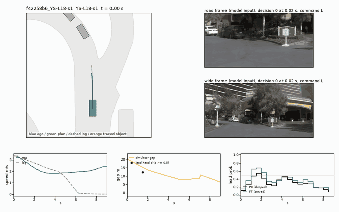
2021.05.25.17.54.41_veh-35_02723_02902-f42258b638fc5b64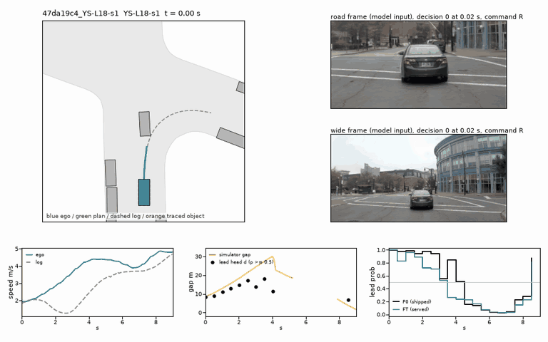
2021.09.16.14.39.34_veh-42_00297_00935-47da19c4edbe5b95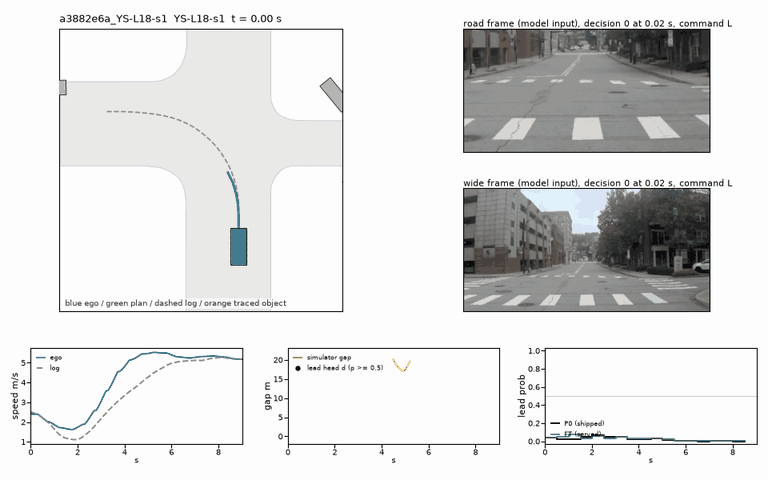
2021.09.16.14.39.34_veh-42_00297_00935-a3882e6ae8635832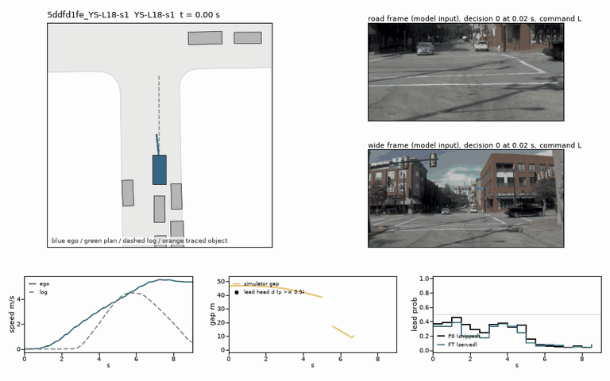
2021.09.16.19.49.00_veh-42_00990_01609-5ddfd1fe80af5ceb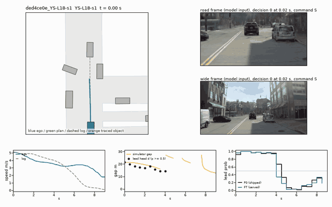
2021.09.16.19.49.00_veh-42_00990_01609-ded4ce0e91b4596a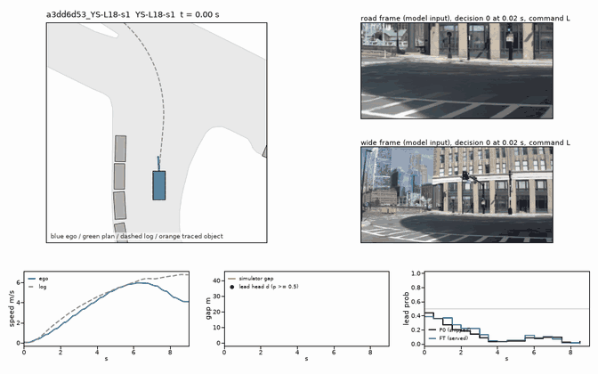
2021.09.29.15.23.04_veh-28_00601_00802-a3dd6d539acc5c9b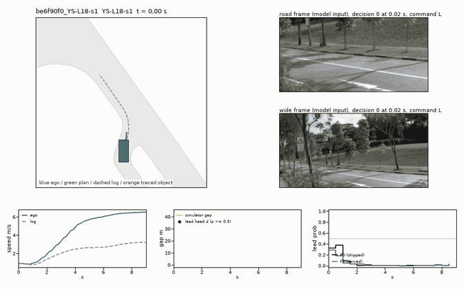
2021.10.06.08.16.17_veh-52_00181_00574-be6f90f06bc35be3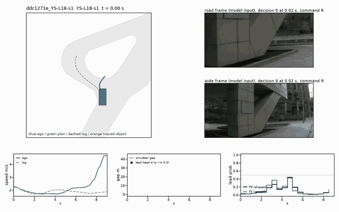
2021.10.06.08.16.17_veh-52_00181_00574-ddc1271ea57154bc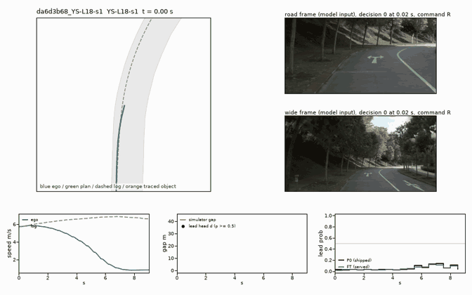
2021.10.06.08.16.17_veh-52_00922_01296-da6d3b6810995466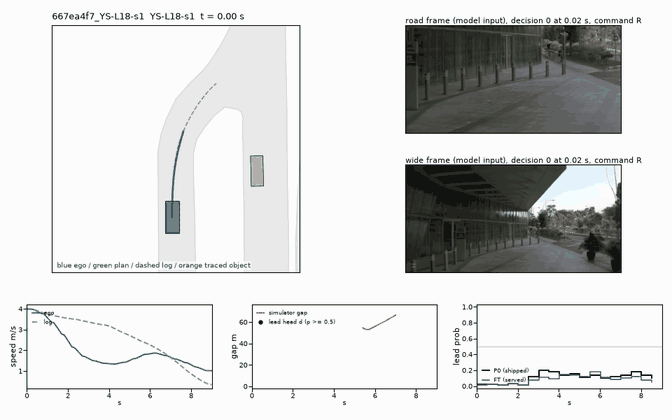
2021.10.06.08.16.17_veh-52_01949_02501-667ea4f79faf5baa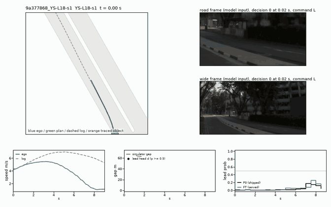
2021.10.06.08.16.17_veh-52_01949_02501-9a3778686fd058d2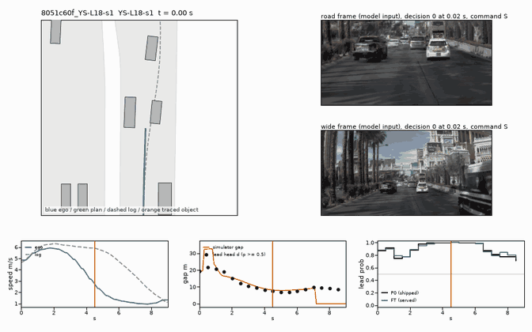
2021.05.25.17.54.41_veh-35_04111_04288-8051c60f20705909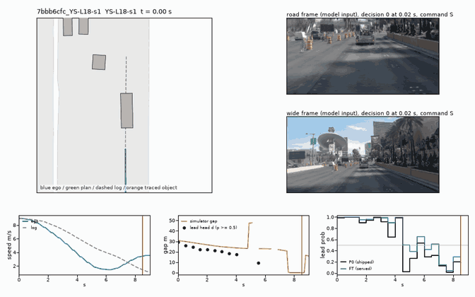
2021.06.03.12.02.06_veh-35_01100_01227-7bbb6cfc4f135e50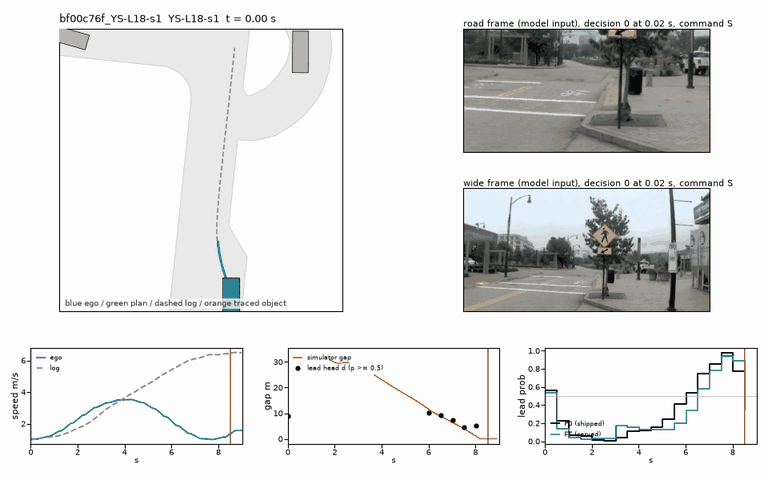
2021.09.16.14.39.34_veh-42_00297_00935-bf00c76f25185b83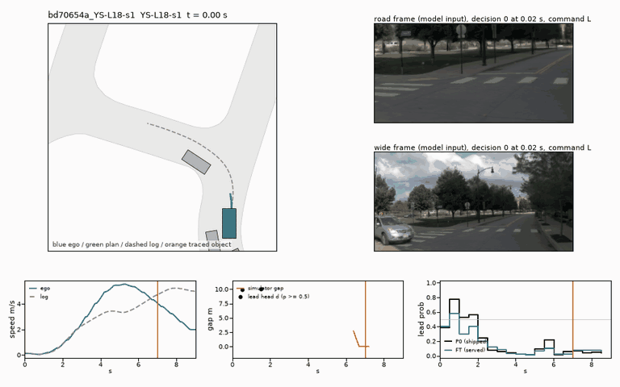
2021.09.16.19.49.00_veh-42_00990_01609-bd70654aee0f54a6